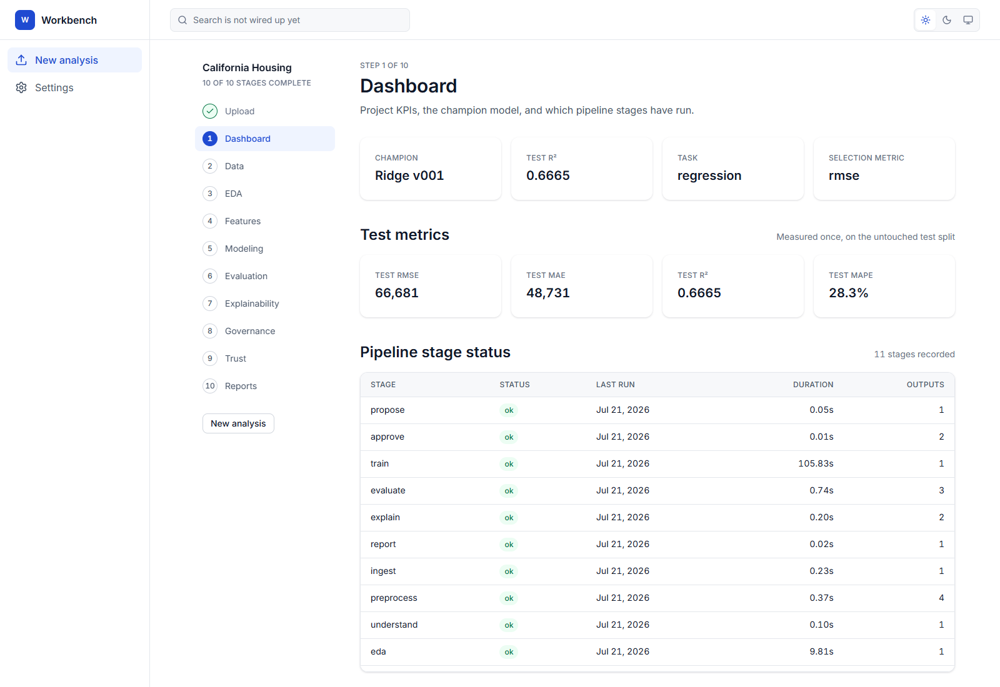

AI Data Science Workbench
From a dataset to a decision you can inspect.
A machine-learning workbench connecting data preparation, model comparison, evaluation, explainability and governance evidence through a shared Python workflow and a web console.

Why this exists.
A model score is useful only when its inputs, preparation and evaluation can be traced. Scattered notebooks and exported charts make it difficult to understand which model was selected, what data it saw and where its weaknesses are.
How it responds.
The workbench gives each stage a place in the workflow and stores its outputs as inspectable artifacts. The web console brings those records together so evaluation, explanations and trust checks can be reviewed alongside the model rather than as disconnected files.
- 01
Prepare
Ingest, preprocess and profile the dataset; construct features and train-fitted transformations.
- 02
Compare
Train and compare candidates using explicit train, validation and test partitions.
- 03
Inspect
Review residuals, subgroup error, permutation importance and applicability of each check.
- 04
Record
Retain model/feature approval records, audit events, reports and hashed artifact lineage.
From inputs to insight.
- Interface
- Next.js / React console and a separate Streamlit dashboard.
- Application bridge
- Next.js route handlers call a local Python JSON bridge.
- ML workflow
- Python, pandas and scikit-learn implement preparation, modelling and evaluation.
- Evidence
- Dataset descriptors, model versions, charts, JSON reports and lineage artifacts.
Architecture summarized from the project source. Runtime verification is described below.
The working experience.
The analysis at a glance
The California Housing dashboard identifies Ridge v001 as the saved champion and displays held-out test metrics alongside recorded pipeline status. This connects a headline result with the workflow that produced it.
Look beyond the headline score
The evaluation view exposes predicted-versus-actual and residual diagnostics from the saved run. These plots help identify systematic error and variation that one average metric can conceal.
Make model weaknesses visible
Subgroup errors and permutation importance provide another lens on reliability. Calibration is explicitly marked not applicable for this regression model rather than displayed as a meaningless score.
Demonstrated, with context.
These screenshots were taken from the running local Next.js console using existing public California Housing artifacts. Ridge v001 records test R² 0.6665, RMSE 66,681 and MAE 48,731. They are saved benchmark results; this portfolio capture did not retrain the model. The pictured console is distinct from the separate Streamlit interface.
Scope & limitations
- The capture verified dashboard, evaluation and trust views. Upload training and the complete pipeline were inspected in source, not executed in this preview.
- The evaluation table contains six model-version entries across Ridge, Lasso and LinearRegression; it does not represent six distinct algorithms.
- Approval records and guards exist, but generic upload workflows can auto-approve records. Audit logs are append-mode records, not cryptographically tamper-proof logs.
- This demonstration does not establish production model serving, regulatory compliance or performance on another dataset.
Why it belongs in my portfolio.
Connects business analytics with reproducible technical work: defining the question, comparing alternatives and explaining the evidence behind a recommendation.
View my recruiter profile ↗